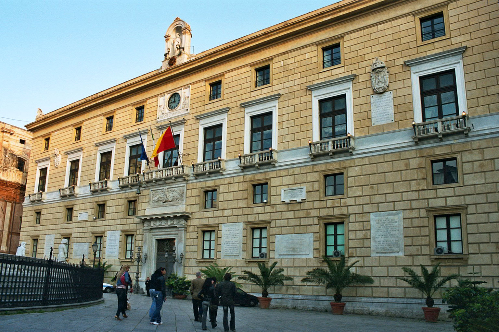
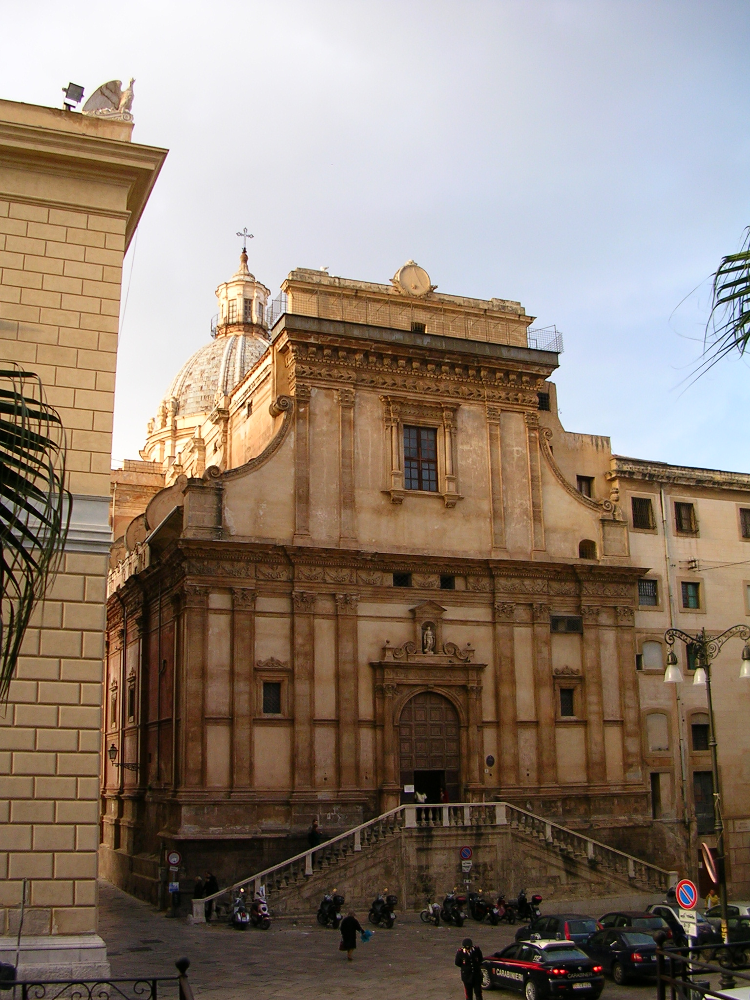

Palermo: Piazza Pretoria Conosciuta popolarmente come Piazza della Vergogna per la nudità delle statue della sua fontana, rappresenta uno dei rari esempi di Rinascimento toscano nel cuore della capitale siciliana. La sua storia inizia nel XVI secolo, quando il Senato palermitano acquistò una monumentale fontana originariamente destinata a una villa fiorentina, stravolgendo l'assetto medievale del quartiere per farle spazio. Circondata dal Palazzo Pretorio e dalla Chiesa di Santa Caterina, la piazza simboleggia da secoli il dialogo complesso e talvolta teatrale tra il potere civico e la rigorosa spiritualità conventuale.

Cosa Visitare

Fontana Pretoria: Un trionfo di marmo bianco con oltre quaranta statue di divinità e
mostri marini.

Palazzo delle Aquile: La storica sede del Comune, ornata dai simboli della città e da
un orologio monumentale.

Chiesa di Santa Caterina: Un gioiello barocco che domina la piazza con la sua
cupola e i suoi marmi mischi.